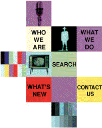

|  |
The Australian Broadcasting Authority is an
independent federal statutory authority
responsible
for the regulation of the broadcasting industry.
As
well as planning the availability of segments of
the
broadcasting services bands (AM and FM radio and
VHF
and UHF television), the ABA has responsibility
for
the licensing, programming, and ownership and
control of broadcasting services.
|
|